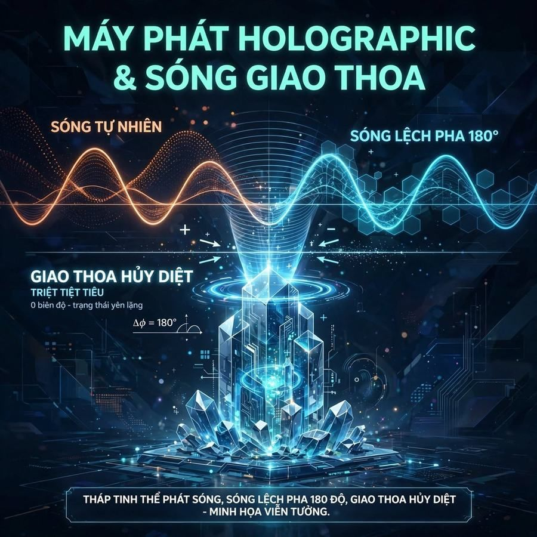
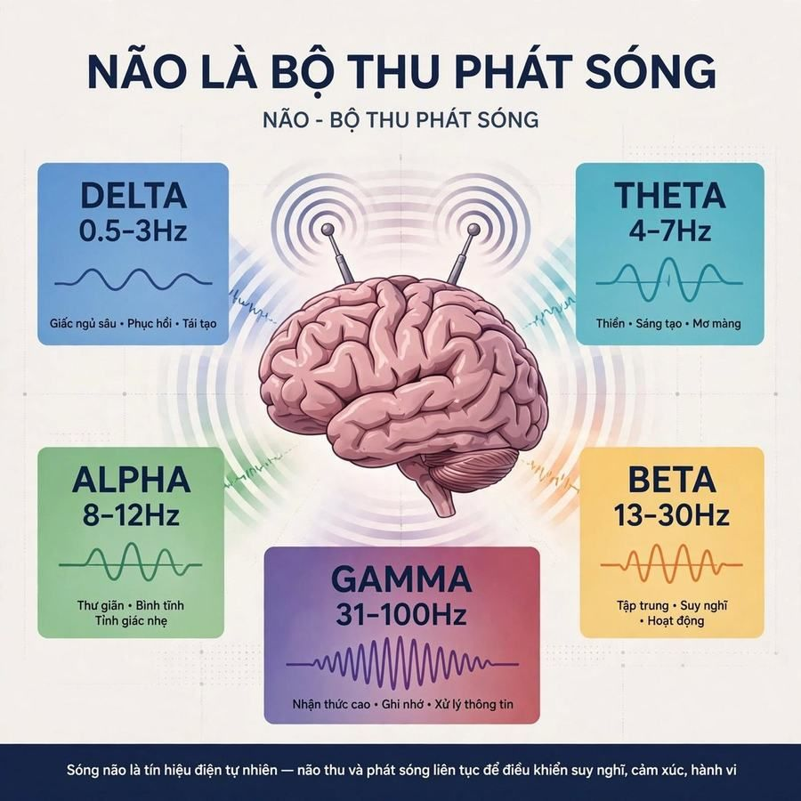
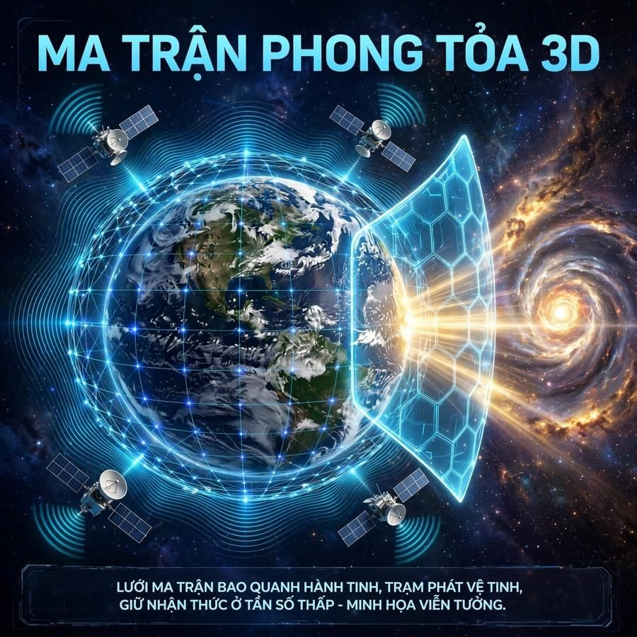
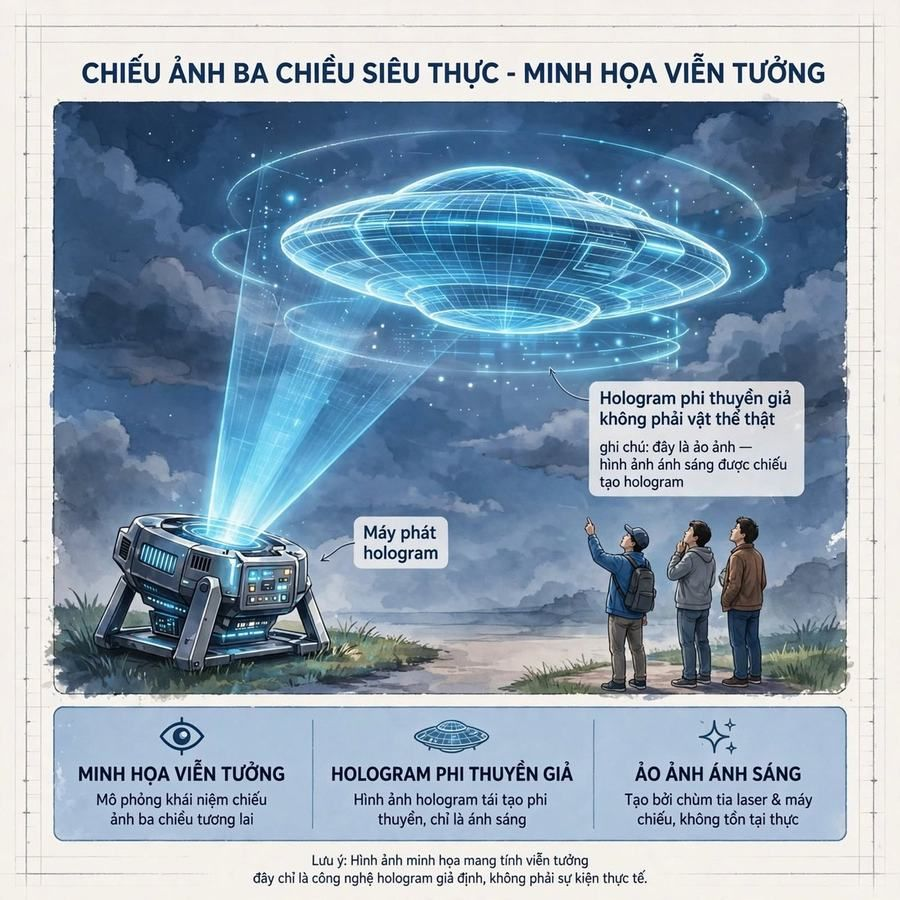
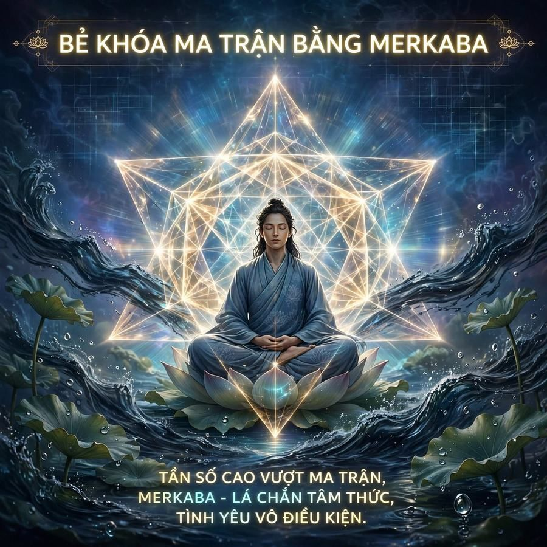
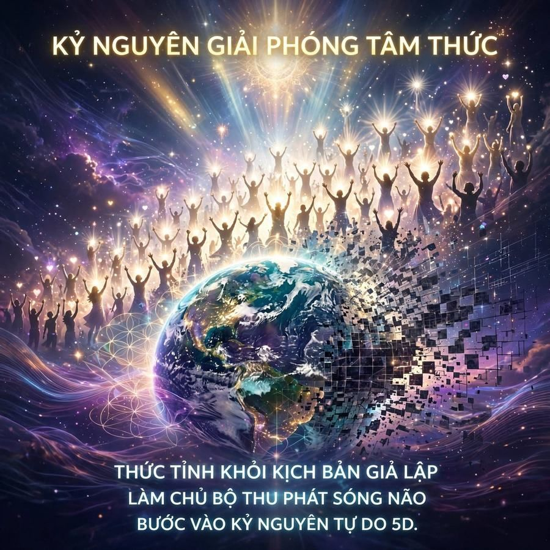

Trang chủ / Chuyên đề 8: Khoa Học & Công Nghệ / Kỳ 77
Chuyên đề 8 · Kỳ 77 / 90
CÔNG NGHỆ THAO TÚNG TẦN SỐ SÓNG NÃO, MA TRẬN 3D & MÁY PHÁT HOLOGRAPHIC

Bạn đã bao giờ tự hỏi: Thực tại mà chúng ta đang quan sát mỗi ngày qua mắt, tai và các giác quan vật lý có thực sự là một thế giới "khách quan duy nhất", hay nó chỉ là một dải tần số tín hiệu được giải mã bởi bộ não? Liệu có tồn tại những công nghệ tiên tiến có khả năng phát ra các dải sóng điện từ đa chiều để định hình nhận thức, phong tỏa ký ức di truyền và chiếu ra một "vũ trụ giả lập" giam cầm tâm thức của hàng tỷ sinh mệnh mà họ hoàn toàn không hề hay biết?
Trong nền khoa học 3D thô hiện tại của Trái Đất, con người thường tin tưởng tuyệt đối vào những gì mình nhìn thấy, nghe thấy và sờ chạm được. Tuy nhiên, ở cấp độ vật lý lượng tử thiên hà, thực tại vật lý không gì khác ngoài một chuỗi dải sóng năng lượng được chiếu ra từ các máy phát tần số (Frequency Generators).
Bằng cách hiểu rõ cơ chế vận hành của Công nghệ Thao túng Tần số Sóng Não, Ma trận Phong tỏa 3D (3D Matrix Grid) và Máy phát Ảnh Ba Chiều (Holographic Generators), chúng ta sẽ mở ra bức màn bí mật về cách mà các trường điện từ có thể định hình suy nghĩ, cảm xúc và nhận thức của một nền văn minh — cũng như con đường tối thượng để bẻ khóa hoàn toàn ma trận này!
Hãy cùng bước vào thế giới khoa học tối thượng của thiên hà để giải mã trọn vẹn nguyên lý vận hành của Công nghệ Thao túng Sóng Não, Ma trận 3D, Máy phát Holographic và Phương pháp Tự do Tâm thức!
✦ ✦ ✦1. BỐI CẢNH VÀ BẢN CHẤT CỦA SỰ THAO TÚNG TẦN SỐ NHẬN THỨC
Để hiểu được cơ chế kiểm soát thực tại bằng công nghệ, trước hết chúng ta cần nhìn lại bản chất của nhận thức con người dưới góc độ sóng sinh học lượng tử.
A. Bộ Não Con Người như một Bộ Thu - Phát Tín Hiệu Sóng (Bio-Receiver & Transmitter)
Bộ não con người không phải là nơi tự sinh ra suy nghĩ, mà đóng vai trò như một bộ thu phát sóng điện từ vi mô (Bio-Electromagnetic Transceiver):
- Các dải Sóng Não (Brainwave Frequencies): Bộ não vận hành ở nhiều dải tần số dao động khác nhau: sóng Alpha (8–12 Hz - thư giãn, trực giác), sóng Beta (13–30 Hz - tư duy logic, căng thẳng 3D), sóng Theta (4–7 Hz - thiền sâu, tiềm thức), sóng Delta (0.5–3 Hz - ngủ sâu, phục hồi) và sóng Gamma (31–100+ Hz - nhận thức siêu chiều, thấu cảm).
- Giải mã Tín hiệu thành Thực tại: Khi mắt nhận hạt photon ánh sáng hay tai nhận sóng âm, các giác quan biến đổi chúng thành dòng điện thần kinh gửi về vỏ não. Bộ não giải mã các xung điện này thành hình ảnh, âm thanh, mùi vị và cảm giác vật lý.
B. Quan điểm Vật lý Thiên hà về Ma trận Thực tại (Matrix Reality)
Khoa học thiên hà tiên tiến khẳng định nguyên lý cốt lõi:
- Thực tại là sự Cộng hưởng Tần số: Bạn chỉ có thể nhận biết và tương tác với những gì nằm trong dải tần số dao động mà giác quan của bạn hòa mạng (Frequency Lock).
- Khả năng Can thiệp Tần số từ Bên ngoài: Nếu một máy phát tần số đủ mạnh phát ra các dải sóng giao thoa bao phủ quanh một khu vực hay hành tinh, nó có thể ép dải sóng não của toàn bộ cư dân tại đó phải dao động theo tần số do máy phát ấn định, từ đó giới hạn phạm vi nhận thức của họ trong một dải tần số cố định!

2. CƠ CHẾ VẬN HÀNH CỦA MÁY PHÁT HOLOGRAPHIC VÀ SÓNG GIAO THOA HỦY DIỆT
Máy phát Holographic (Holographic Generators / Frequency Emitters) là công nghệ cao cấp cho phép tạo ra các môi trường thực tại giả lập hoặc bóp méo dải tần số nhận thức tự nhiên.
A. Cấu tạo của Máy phát Holographic Siêu Tần (Quantum Holographic Emitters)
- Bộ Phản ứng Tinh thể Lượng tử: Trái tim của máy phát chứa các tháp tinh thể thạch anh lượng tử được nuôi trồng đặc biệt, nối liền với lò phản ứng Năng lượng Điểm Không (ZPE).
- Mạng lưới Antenna Vi mô Đa chiều: Máy phát ra các chùm sóng dừng (Standing Waves) và dải sóng vô tuyến cực ngắn (Scalar Waves) có khả năng xuyên qua mọi vật chất thô như bê tông, kim loại hay lòng đất.
B. Cơ chế Sóng Giao thoa Hủy diệt (Destructive Interference)
Để phong tỏa một dải tần số tâm thức cao (như trực giác hay khả năng thần giao cách cảm):
- Quét Tần số Tự nhiên của Sinh mệnh: Máy phát quét dải sóng não và dải tần số di truyền tự nhiên của cư dân bản địa.
- Phát ra Sóng Lệch Pha (Out-of-Phase Wave): Máy phát ra một dải sóng điện từ có bước sóng đảo ngược 180 độ so với dải sóng nhận thức tự nhiên của sinh mệnh.
- Triệt tiêu Tín hiệu Tự nhiên: Hai dải sóng gặp nhau sẽ tự triệt tiêu lẫn nhau (Destructive Interference). Kết quả là khả năng kết nối trực giác, thị giác đa chiều và ký ức lịch sử di truyền của sinh mệnh bị "tắt nghẽn" hoặc đóng băng, đẩy họ vào trạng thái quên mất bản thể thực sự!

3. GIẢI MÃ CẤU TRÚC MA TRẬN PHONG TỎA 3D (THE 3D FREQUENCY MATRIX GRID)
Trong lịch sử thiên hà, khi các lực lượng tiêu cực muốn nô dịch một hành tinh mà không cần dùng đến vũ khí tàn phá vật lý, họ thiết lập một Ma trận Tần số Phong tỏa (Frequency Cage / Holographic Matrix Grid).
A. Hệ thống Trạm Phát sóng Tần số Thấp Toàn cầu
- Mạng lưới Trạm phát Vệ tinh & Căn cứ: Các máy phát sóng tần số thấp được đặt trên các trạm quỹ đạo không gian, các vệ tinh tự nhiên hoặc các căn cứ ngầm chiến lược trên hành tinh.
- Chăn Màn Tần số (Frequency Canopy): Các máy phát này hiệp đồng phát ra một dải lá chắn điện từ bao bọc kín bầu khí quyển hành tinh. Dải lá chắn này hoạt động như một "bức tường tần số" ngăn chặn các dải sóng năng lượng ánh sáng siêu tần từ Trung tâm Thiên hà chiếu xuống.
B. Giữ Nhận thức trong "Vùng Sợ hãi và Sinh tồn"
- Bắt nổ Tần số Sóng Beta/Theta Tiêu cực: Ma trận phong tỏa liên tục phát ra dải sóng dừng ở tần số thấp (tương đương với tần số sợ hãi, lo âu, phân chia, giận dữ và bản năng sinh tồn thô).
- Tạo ra Bẫy Tái sinh và Quên ký ức: Khi một sinh mệnh qua đời trong vùng ma trận phong tỏa, trường năng lượng của ma trận sẽ hút dải sóng tâm thức của họ vào các thiết bị rữa sạch ký ức (Memory-Wipe Beams), buộc họ phải tái sinh trở lại dải 3D mà không nhớ mình là ai hay đến từ đâu!

4. CÔNG NGHỆ CHIẾU ẢNH BA CHIỀU SIÊU THỰC VÀ THAO TÚNG NIỀM TIN (HOLOGRAPHIC ILLUSIONS)
Một tính năng đáng sợ khác của máy phát Holographic chính là khả năng tạo ra các hình ảnh, hiện tượng và sự kiện giả lập siêu thực ngay trong không gian vật lý.
A. Công nghệ Projection Holographic Siêu Thực (Physical-Grade Holograms)
- Tạo ra Vật thể Ảnh ba chiều có Khối lượng Giả lập: Khác với máy chiếu 2D/3D thô sơ của con người, máy phát Holographic thiên hà chiếu các chùm hạt photon được ion hóa trực tiếp vào không khí.
- Chiếu ra Phi thuyền hay Hiện tượng Thiên nhiên Giả: Mắt người nhìn thấy một chiếc phi thuyền khổng lồ, một vị thần linh hay một vệt sáng trên bầu trời với đầy đủ ánh sáng, bóng đổ và hiệu ứng âm thanh. Thậm chí các hệ thống radar quân sự sơ khai cũng có thể bị lừa khi chùm sóng ion hóa làm giả tín hiệu phản xạ!
B. Công nghệ Truyền Sóng Âm Trực tiếp vào Vỏ Não (Neural Beaming / V2K)
- Chiếu Sóng Âm qua Xương Sọ (Voice-to-Skull Technology): Máy phát sử dụng chùm sóng vi ba (Microwave pulse) mã hóa tín hiệu âm thanh truyền thẳng vào vùng vỏ não thính giác của nạn nhân mà không đi qua màng nhĩ.
- Tạo cảm giác "Tiếng nói Nội tâm": Nạn nhân nghe thấy một giọng nói rõ ràng vang lên ngay bên trong đầu mình, tưởng rằng đó là tiếng nói của Thượng đế, Thần linh hay Trực giác của chính mình, từ đó dễ dàng bị thao túng và dẫn dắt hành động theo kịch bản của máy phát!

5. CÔNG NGHỆ BẺ KHÓA MA TRẬN VÀ PHƯƠNG PHÁP BẢO VỆ TRƯỜNG TÂM THỨC
Dù công nghệ Ma trận 3D và Máy phát Holographic có tinh vi đến đâu, khoa học vũ trụ luôn chứng minh một quy luật tối thượng: Máy móc điện tử không bao giờ có thể thống trị được Tâm thức Nguồn thuần khiết!
A. Nguyên lý "Tần số Cao vượt qua Tần số Thấp" (High Frequency Primacy)
- Trí tuệ Nhân tạo và Máy móc bị giới hạn ở dải 3D/4D: Mọi máy phát sóng từ trường AI hay Ma trận Holographic chỉ có thể vận hành trong dải tần số mật độ 3D và 4D thấp.
- Sức mạnh của Tần số Gamma & Tình yêu Vô điều kiện: Khi một sinh mệnh nâng cao tần số nhận thức của mình lên dải sóng Gamma (trên 35 Hz), kích hoạt Luân xa Tim và sống trong tình yêu thương vô điều kiện, dải tần số của họ sẽ vượt lên trên dải sóng phong tỏa của Ma trận!
- Hiện tượng Tự giải Phong tỏa: Trường năng lượng của ma trận không thể bám dính hay thao túng một người có tần số dao động cao. Sóng thao túng sẽ trượt qua trường khí chất của người đó giống như nước trượt trên lá sen!
B. Kích hoạt Trường Hào quang Merkaba Tự nhiên
- Lá chắn Tâm thức Bất xâm phạm: Thông qua thực hành thiền định, làm sạch cảm xúc và kết nối với bản thể cao hơn, sinh mệnh kích hoạt trường quay Merkaba (hình bát diện ánh sáng) bao quanh thể xác.
- Trung hòa Sóng Điện từ Độc hại: Trường Merkaba phát ra tần số cộng hưởng tự nhiên, trung hòa toàn bộ các dải sóng V2K, sóng thao túng tâm trí hay các máy phát Holographic giả lập xung quanh!

6. BÀI HỌC VÀ KỶ NGUYÊN GIẢI PHÓNG TÂM THỨC CHO NHÂN LOẠI TRÁI ĐẤT
Sự hiểu biết về Công nghệ Thao túng Tần số Sóng Não, Ma trận 3D & Máy phát Holographic mang lại những bài học giải phóng vĩ đại cho nhân loại Trái Đất:
- Thức tỉnh khỏi Kịch bản Giả lập: Con người sẽ ngừng hoảng sợ trước các chiêu trò tạo dựng hình ảnh giả lập, các màn trình diễn ánh sáng hay các thông điệp thao túng trên truyền thông đại chúng. Chúng ta nhận ra rằng sự thật nằm ở dải tần số nội tâm chứ không nằm ở các ảo ảnh bên ngoài.
- Làm chủ Bộ Thu phát Sóng Não của Chính Mình: Mỗi người học cách quản lý suy nghĩ, cảm xúc và duy trì dải tần số bình thản, từ bi. Khi hàng tỷ con người cùng nâng cao tần số nhận thức, Ma trận Phong tỏa 3D sẽ tự động sụp đổ do không còn nguồn năng lượng sợ hãi để duy trì!
- Bước vào Kỷ nguyên Tự do 5D: Khi ma trận bị tháo bỏ, bộ gen di truyền và các khả năng thần giao cách cảm, trực giác đa chiều của loài người sẽ bừng sáng trở lại, đưa nhân loại chính thức bước vào Kỷ nguyên Vũ trụ Tự do!
